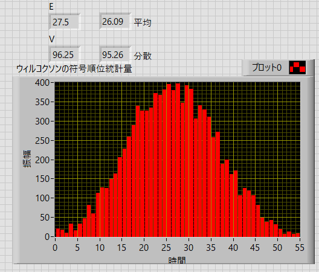
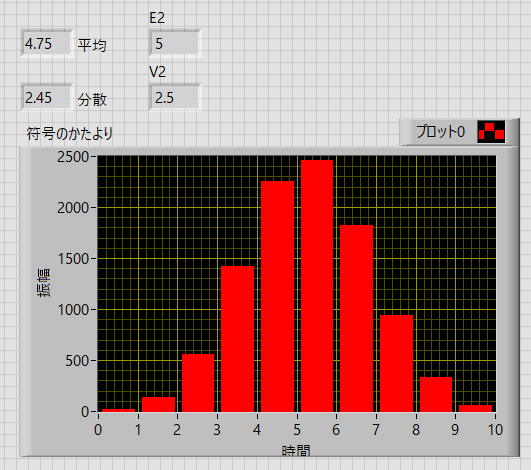

ウィルコクソンの符号順位統計量 - なぜ順位を決める？？？
ウィルコクソンの符号順位統計量，は
対応のあるデータのデータの差がプラスかマイナスか
という検定となります．
さらに，
プラス（マイナス）の順位の和を検定する
手法をとっています．
が．．ここで単純な疑問が．．．
順位をあえて計算する必要がある？
プラスかマイナスかの数を判定するだけじゃいけないの？
という疑問が．．．．．
私の理解の先に，ウィルコクソンの符号順位統計の有意性があったり，もしかしたら，そのような判定方法がすでにあるのかもしれませんが．．．
とりあえず，試してみます．
以前のページと同じデータを使ってみます．
before, after, の差を求めるのですが，プラスかマイナスだけの判定をします．
| before | after | 差 | 差の符号 | |
| A | 12 | 8 | 4 | + |
| B | 7 | 20 | -13 | - |
| C | 19 | 28 | -9 | - |
| D | 22 | 23 | -1 | - |
| E | 15 | 22 | -7 | - |
| F | 15 | 20 | -5 | - |
| G | 15 | 23 | -8 | - |
| H | 11 | 17 | -6 | - |
| I | 15 | 13 | 2 | + |
| J | 11 | 8 | 3 | + |
| 合計 | 3 |
10データのうち，３データがプラス（７データがマイナス），微妙ですね．
全部プラス（orマイナス）なら効果があったかはすぐわかるのですが．．．．
もしくは半分プラスなら効果がないと言えるのですが．．．
完全にランダムな場合には，ベルヌーイ分布に従うはずです．
ですので，期待値，分散値は，
\(\Large \displaystyle E(T)= np = \frac{n}{2} = 5 \)
\(\Large \displaystyle V(T)= np(1-p) = \frac{n}{4} = 2.5 \)
となりますので，ｚ値は，
\(\Large \displaystyle z_+ = \frac{T_+-E(T_+)}{\sqrt{V(T_+)}} = \frac{3-5}{\sqrt{2.5}} = -1.265 \)
\(\Large \displaystyle z_- = \frac{T_--E(T_-)}{\sqrt{V(T_-)}} = \frac{7-5}{\sqrt{2.5}} = 1.265 \)
標準正規分布における両側５％の範囲は，こちらに，記載しましたように，±1.96，となるので，
\(\Large \displaystyle -1.96 < \frac{T-E(T)}{\sqrt{V(T)}} < 1.96 \)
となり，±1.96の範囲内なので，有意さがあるとは言えない，ことになります．
同じデータを，ウィルコクソンの符号順位統計量，で検定すると，
±1.886
となり（参照），値が異なります．．．．
シミュレーションで確認してみました．
データ数：10
before and after：初期値10に対して，±10のランダムな値を付加
試行回数：10,000回施行
としました．
その結果，
ウィルコクソンの符号順位統計量

\(\Large \displaystyle E(T) = \frac{n (n+1)}{4} = 27.5 \)
\(\Large \displaystyle V(T) = \frac{n (n+1)(2n+1)}{24} = 96.25 \)
差の符号のカウント

\(\Large \displaystyle E(T)= np = \frac{n}{2} = 5 \)
\(\Large \displaystyle V(T)= np(1-p) = \frac{n}{4} = 2.5 \)
とそれぞれ，想定した平均値，分散値の通りとなっており，（たぶん）正規分布になっていることがわかります．
差の符号のカウントの方が単純なような気がするのですが．．．．．
たぶん，長い歴史の中でいろいろな研究者が苦労されて生き残った方式なので，ウィルコクソンの符号順位統計量の方が優れているのでしょう．．．
どなたかご存じの方は教えていただけるとありがたいです．